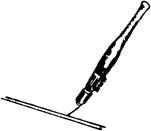
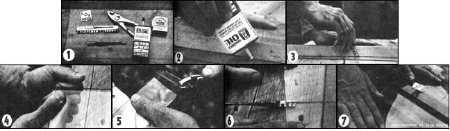

One skill which can come in mighty handy to just about anyone-whether you live on OR off the farm-is glass cutting.
Now, many homesteaders and suburbanites have taken the time to become competent carpenters . . . but for some reason, very few people have ever learned how to [1] find free or inexpensive glass, and [2] cut it once it's found.
Fact is, of course, a lot of folks are intimidated by glass because they assume it's too difficult to work with, or too dang costly in the first place . . . neither of which is true. Glass cutting is merely a skill that can be learned (like tanning, canning, or composting) and the techniques involved are not at all complicated. And anyway, it's just a matter of time before you'll need to use glass for your home, cold frame, greenhouse, solar collectors . . . or whatever.
Sure, you can substitute polyethylene. In a short time, though, the plastic will become yellowish and brittle and have to be replaced. Glass is all-around superior because it's durable, it's not that costly, it's forever transparent and-best of all-it's not made from energy-intensive, non-recyclable materials.
Let's briefly look at some of the different kinds of glass you'll run across:
WINDOW GLASS is the most common variety you're likely to work with. It's available in single- and double-weight thicknesses.
PLATE GLASS is both stronger and thicker than double-strength window glass, while usually not more than 3/8" thick.
LAMINATED SAFETY GLASS: Two sheets of glass bonded together by an extremely tough, clear plastic.
MIRRORS need no introduction, but I might point out that you can scrape the reflective backing off most any mirror with a single-edge razor blade, and-presto!-you'll have another see-through pane.
WHERE TO FIND NEW AND USED GLASS
HARDWARE STORES usually sell window glass only, cut to order. (Here, you might as well let them cut the glass for you. That way, if anything gets broken, the fault lies with them . . . not you.) While these outlets are convenient, they are also the most expensive everyday source of glass.
GLASS STORES specialize in window glass, plate glass, auto glass, stained glass, or any combination thereof. You can pick up new glass at such outlets for less than you'd pay at a hardware store. These specialists also are often willing to cut your purchase into some pretty weird shapes, if you want them to.
Aside from dealing in brand-new wares, specialty stores are also frequently a good source of inexpensive and (sometimes) free glass. Ask if there are any seconds available. A second could be a pane that's pitted, scratched, or perhaps a bit distorted . . . none of which, for all practical purposes, affects the piece's utility. If you don't mind such imperfections, seconds offer the purchaser a good way to save a substantial amount of bread.
Also inquire about cracked laminated satety glass. The store's manager might think you're cracked, but actually, damaged safety glass can be put to good use in cold frames, greenhouses, and whatnot. (The "sandwich" material leaves even cracked sheets of glass with enough strength so that they'll work OK in most applications.) If your shop carries cracked safety glass, you should be able to get it for free . . . or nearly so, in any case. Busy shops constantly remove such damaged panes and sheets from cars or trucks that are having new windows installed. If your local outlet doesn't carry any cracked auto glass-and they may not-it's probably because more and more cars today are equipped with tempered windows which, instead of cracking when damaged, just disintegrate into thousands of jewel-like bits and pieces.
Unfortunately, dealers simply don't use as much laminated glass as they once did. Nevertheless, inquire anyway and ask if they'll save you any odd pieces they come across which might otherwise go in the trash.
AUTO WRECKERS are, of course, a good potential source of laminated safety glass-cracked or intact-should your local glass shop not have any.
BUILDING WRECKERS, SALVAGE YARDS, SECOND HAND STORES, AND COUNTRY AUCTIONS, all are good places to look for low-cost used glass. If you dig awhile, you're likely to find old storm windows, sliding glass doors, framed picture windows . . . and who knows what else.
One good way to save a bundle on glass is to seek out old storefront windows. These plate glass wonders are usually scratched, chipped, painted, and lettered over, but you'd be surprised how quickly a razor blade and some paint stripper will tidy things up . . . and the price is usually right, if you volunteer to scrape the paint off yourself.
TOWN DUMPS? Why not? Better to be down in the dumps than to be without glass.
HOW TO CUT GLASS . . . THE RIGHT WAY
The following basic techniques should get you through most glass-cutting jobs. Needless to say, you should practice on unusable bits and pieces first.
[1] Dust off the top of your cutting surface, preferably a smooth table.
[2] Lay out all tools: oil, pliers, tape measure, straightedge, and glass cutter. (I always use either a Flatter or Red Devil cutter, which in my estimation are the most reliable brands. Whatever you do, don't go in for a combination cutting tool, screwdriver, knife sharpener, and Lord knows what else. Just a glass cutter, please.)
[3] Place the pane or sheet you want to trim or divide on the table and be sure the area which you intend to cut is scrupulously clean . . . no paint, dirt, putty, etc.
[4] Next, hold a straightedge against the glass and run a thin stream of lightweight oil down the cutting line (Photo 2).
[5] Now, "make your mark". Bear down firmly-but not stiffly!-with the cutter and score the glass in one even, sweeping motion (Photo 3). If you score the glass properly, you'll hear a very pleasant clicking sound. Remember, the cutter only scratches the surface . . . it doesn't cut through. If you see little flakes of glass flying into the air during this part of the operation, it means that either you forgot the oil or your cutter is too sharp or you're bearing down with the weight of Gibraltar.
[6] After you've scored-as we say in this business-go right ahead and-snap the piece in two. (Don't wait around, or it may not snap as cleanly.) Photos 4 through 7 show several ways of making the break.
The whole idea of scoring is to weaken the glass by focusing internal stresses along a single path. These stresses are then relieved as you break the glass in two.
[7] Finally, if necessary, you should smooth the edges of the two new panes or window lights with wet emery cloth (or with a grinder, if one is available).
First score the glass on one side, and press your thumbs firmly on the unscored side until you hear the etched side snap. Then score and snap the other side. Finally, apply a thin stream of lighter fluid to either cut, ignite, and step back.
When the fire has gone out, the heat will have weakened the plastic between the layers of glass and you can cut the two pieces apart with a razor blade.
You'll find that new (that is, sharp) cutters work best on window glass, while cutters that have been around awhile-and no longer have their original keen edge-do best on plate and safety glass.
A final tip: Instead of tossing away all those seemingly unusable shards of glass which begin to accumulate, why not read Mary Lou Stribling's Art From Found Materials? With her ideas for glass mobiles and mosaics, she takes the concept of recycling a delightful-and welcome-step further.
|
 |
 |
|